¡Un consejo importante para tu aprendizaje!
No temas cometer errores, ¡son parte del proceso!La práctica lleva a la perfección, no la perfección a la práctica. ¡Ánimo y disfruta el viaje!


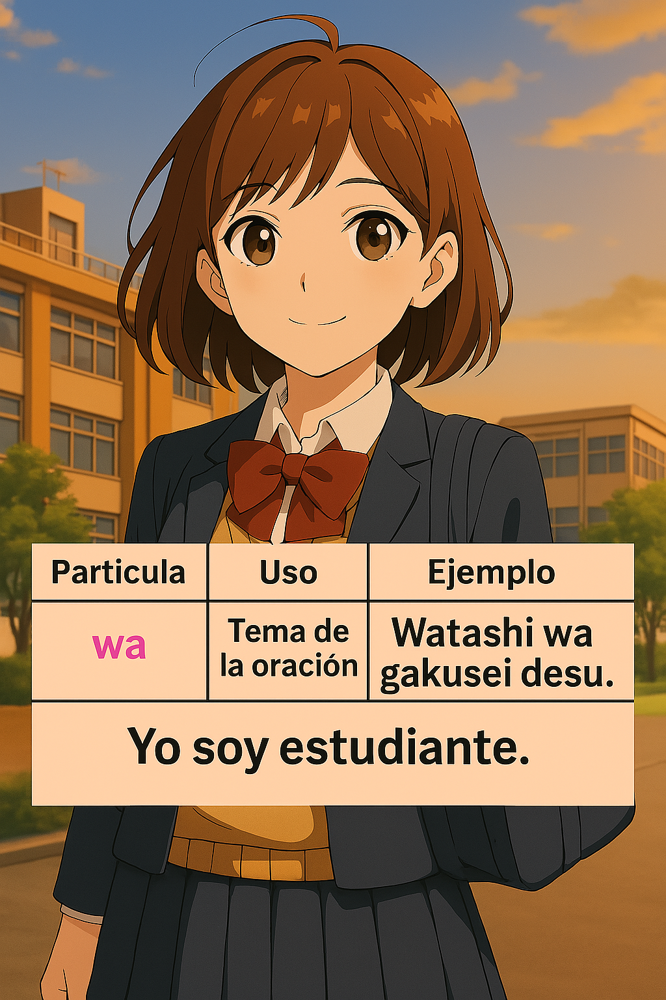
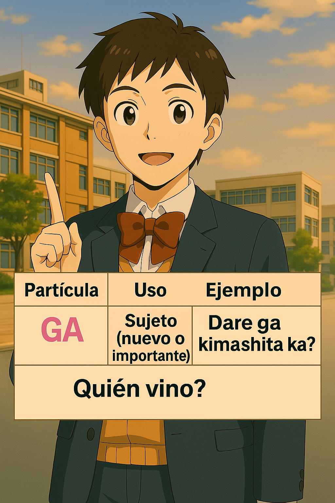
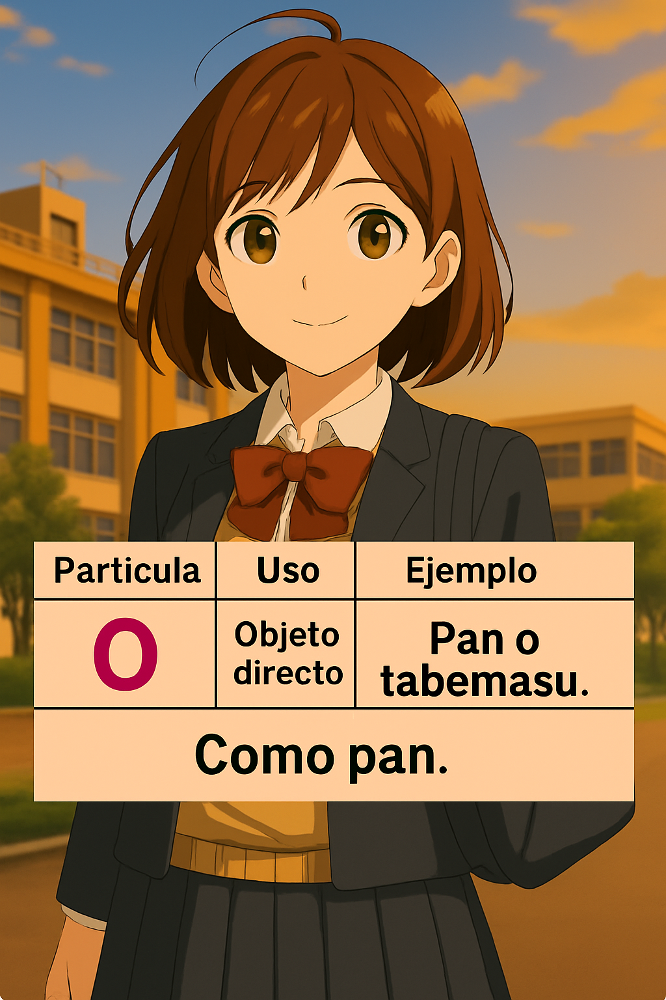
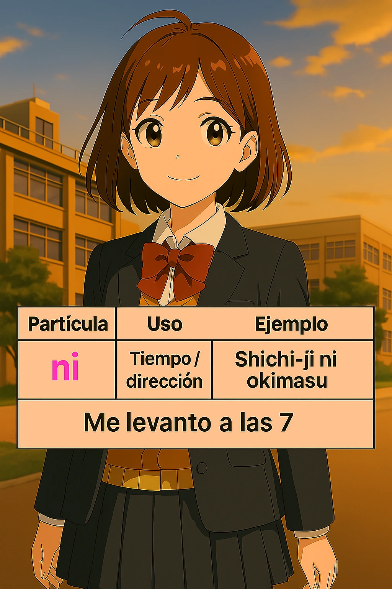
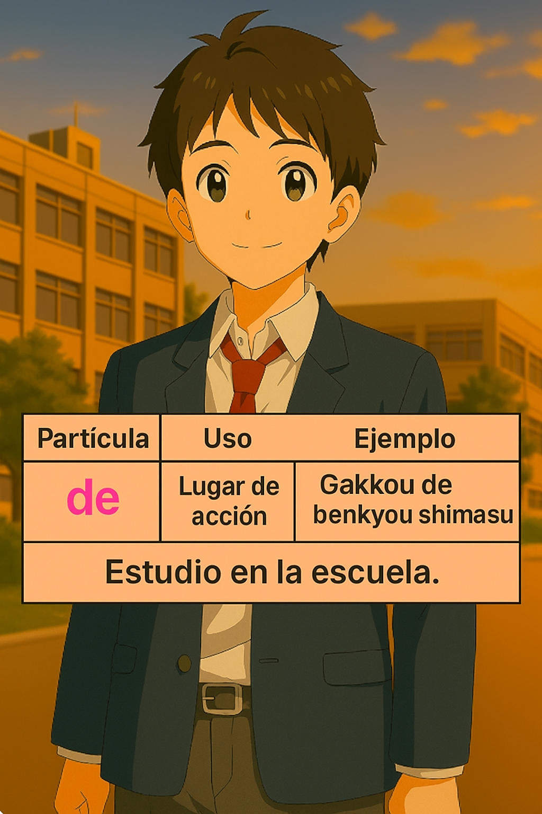
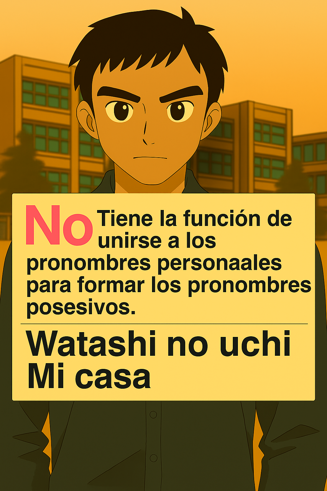
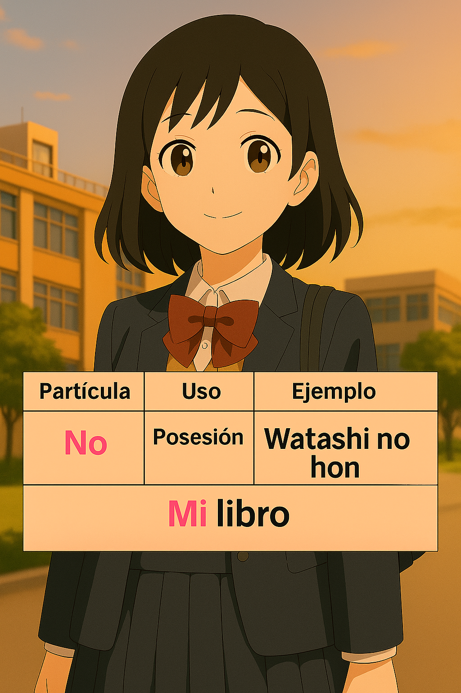
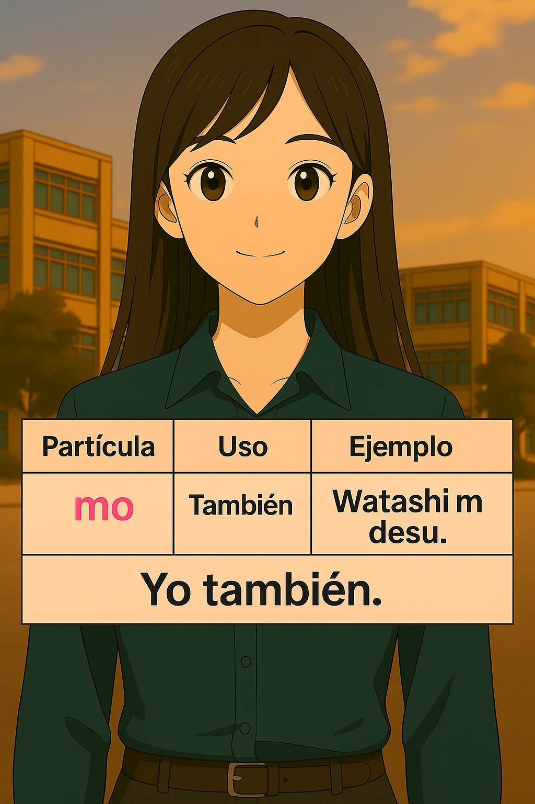


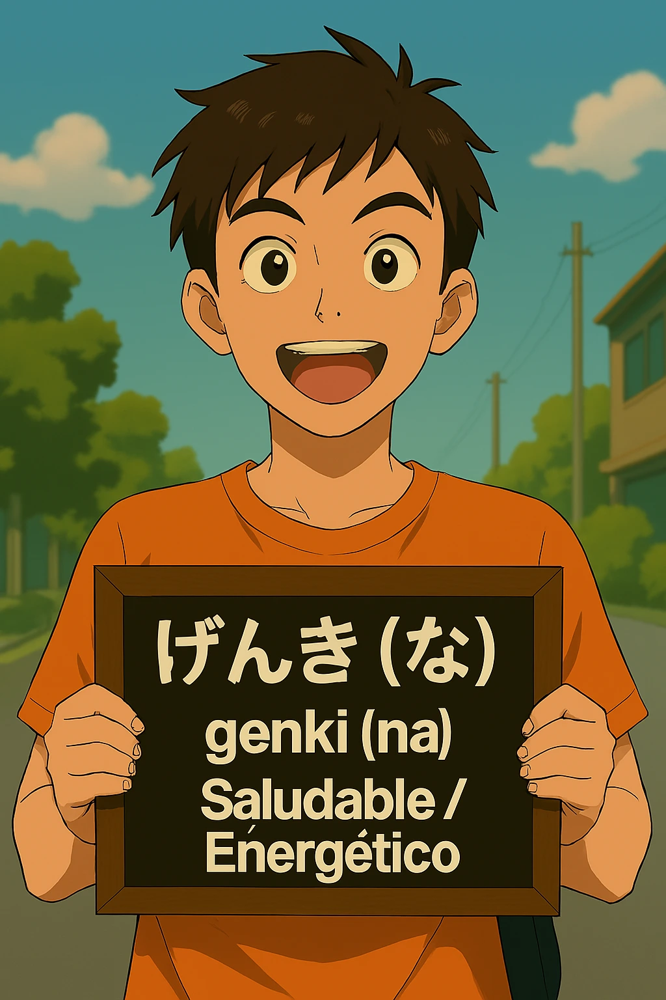


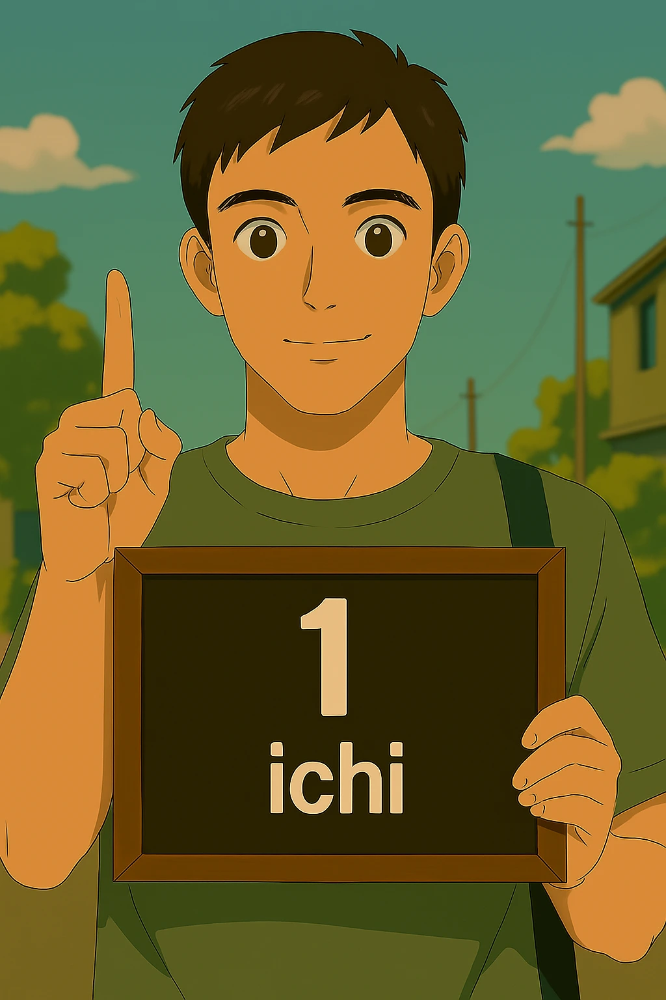
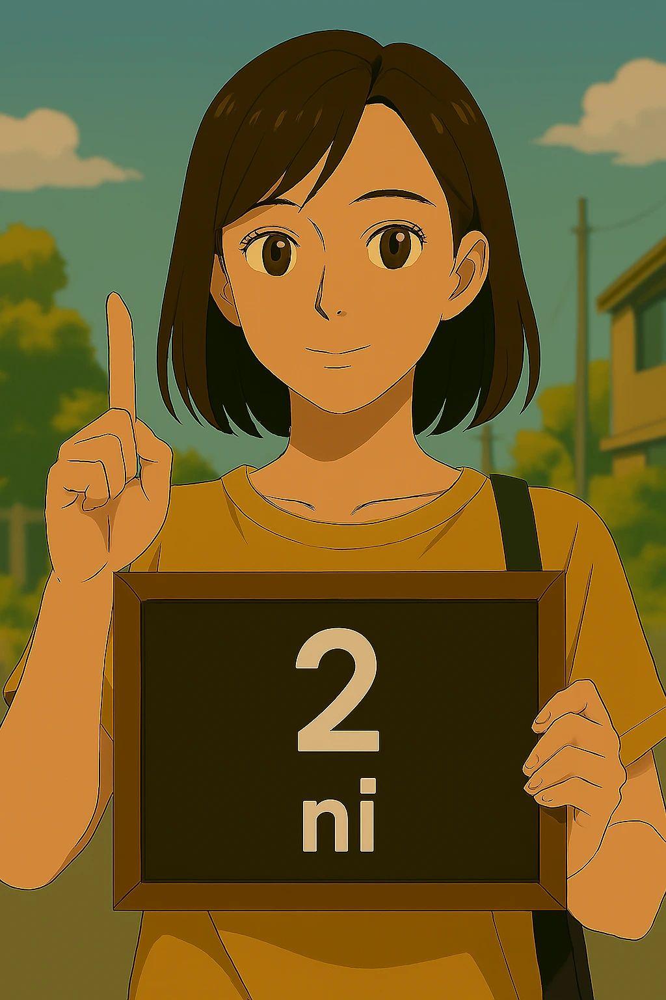
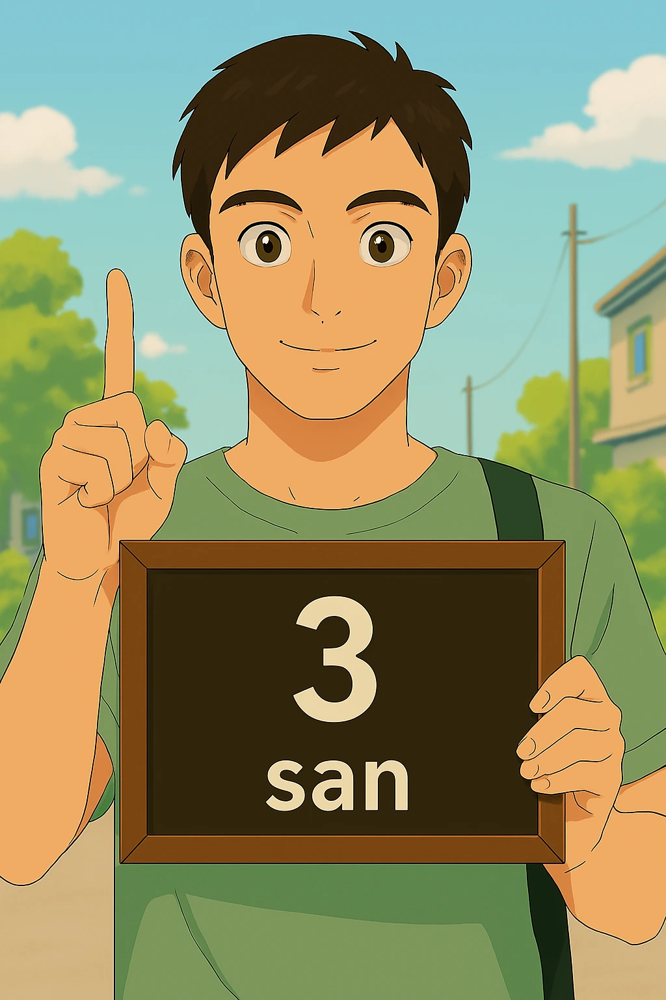